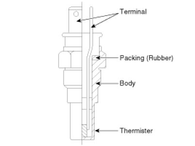

Coolant Temperature Sensor/Switch (For Computer): Description and Operation
Description
Engine Coolant Temperature Sensor (ECTS) is located in the engine coolant passage of the cylinder head for detecting the engine coolant temperature. The ECTS uses a thermistor whose resistance changes with the temperature.
The electrical resistance of the ECTS decreases as the temperature increases, and increases as the temperature decreases. The reference +5V is supplied to the ECTS via a resistor in the ECM. That is, the resistor in the ECM and the thermistor in the ECTS are connected in series. When the resistance value of the thermistor in the ECTS changes according to the engine coolant temperature, the output voltage also changes.
During cold engine operation, the ECM increases the fuel injection duration and controls the ignition timing using the information of engine coolant temperature to avoid engine stalling and improve drivability.
